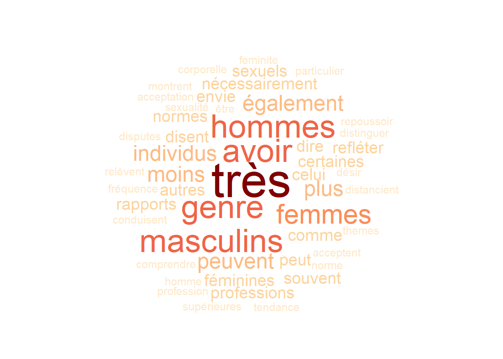

Warning: package 'R.temis' was built under R version 4.2.3
Loading required package: tm
Warning: package 'tm' was built under R version 4.2.3
Loading required package: NLP
Loading required package: slam
Loading required package: FactoMineR
Warning: package 'FactoMineR' was built under R version 4.2.3
Loading required package: explor
Warning: package 'explor' was built under R version 4.2.3
library("RColorBrewer") # pour charger des couleurs dans le nuage de mot
(N’oubliez pas d’installer les packages avant d’exéctuer les libraries si ceux-ci sont nouveaux!) Concernant le choix des données, j’ai choisis une publication de Mathieu Trachman datant de 2022 intitulé “Très masculin, pas très féminine. Les variations sociales du genre”, Population et Sociétés: 1-4, pour illustrer mon exemple.
# ---- Import des données ----corpus <-import_corpus("C:/Users/cottet_cor/Documents/Stage-1A-main/Stage-1A-main/Exemple_quarto/R/Nuage_de_mot/genre.csv",format="csv",textcolumn=1,language="fr")
C’est quoi les stop_words?
Les stop words (ou mots vides) sont des mots très courants dans un langage donné, comme les prépositions, les articles, les pronoms, etc., qui sont souvent omis lors de l’analyse de texte car ils ne portent pas de sens important pour la compréhension globale du texte.
# ---- traitement des données ----dtmsmo <-build_dtm(corpus, remove_stopwords = T, min_length =0)dic <-dictionary(dtmsmo) #création d'un dictionnaire de mot frequent_terms(dtmsmo) #fréquence d'apparition des mots dans le texte en question
Il est possible de faire un traitement plus poussé des données
# ---- Générateur du Nuage ---- cloud<-word_cloud(dtmsmo, color=brewer.pal(10, "OrRd"), min.freq=0)
Warning in brewer.pal(10, "OrRd"): n too large, allowed maximum for palette OrRd is 9
Returning the palette you asked for with that many colors

terms_graph(dtmsmo, min_occ=1,interactive=T) #pour obtenir un graph de mots.